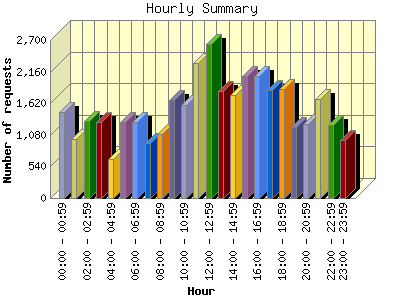
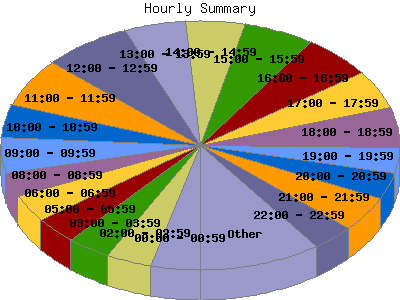

Report generated by Analog 6.0 and Report Magic 2.21
|
Web Server Statistics for "Harish Narayanan (hnarayan) - September 2007" Report generated by Analog 6.0 and Report Magic 2.21 |
The Hourly Summary identifies the level of activity broken down by each hour. Remember that one page hit can result in several server requests as the images for each page are loaded. This summary also compares the level of activity during working hours and after hours as a total for the report time frame.


| Hour | Number of requests | Number of bytes transferred | Percentage of the bytes | Percentage of the requests | |
|---|---|---|---|---|---|
| 1. | 00:00 - 00:59 | 1,463 | 33.372 MB | 2.93% | 4.01% |
| 2. | 01:00 - 01:59 | 1,004 | 33.623 MB | 2.96% | 2.75% |
| 3. | 02:00 - 02:59 | 1,317 | 27.899 MB | 2.45% | 3.61% |
| 4. | 03:00 - 03:59 | 1,299 | 71.816 MB | 6.31% | 3.56% |
| 5. | 04:00 - 04:59 | 673 | 25.686 MB | 2.26% | 1.84% |
| 6. | 05:00 - 05:59 | 1,301 | 63.043 MB | 5.54% | 3.57% |
| 7. | 06:00 - 06:59 | 1,292 | 41.035 MB | 3.61% | 3.54% |
| 8. | 07:00 - 07:59 | 936 | 32.952 MB | 2.90% | 2.57% |
| 9. | 08:00 - 08:59 | 1,101 | 65.075 MB | 5.72% | 3.02% |
| 10. | 09:00 - 09:59 | 1,674 | 58.930 MB | 5.18% | 4.59% |
| 11. | 10:00 - 10:59 | 1,594 | 52.606 MB | 4.62% | 4.37% |
| 12. | 11:00 - 11:59 | 2,312 | 41.425 MB | 3.64% | 6.34% |
| 13. | 12:00 - 12:59 | 2,628 | 40.223 MB | 3.54% | 7.21% |
| 14. | 13:00 - 13:59 | 1,830 | 54.802 MB | 4.82% | 5.02% |
| 15. | 14:00 - 14:59 | 1,761 | 44.930 MB | 3.95% | 4.83% |
| 16. | 15:00 - 15:59 | 2,083 | 62.778 MB | 5.52% | 5.71% |
| 17. | 16:00 - 16:59 | 2,083 | 88.079 MB | 7.74% | 5.71% |
| 18. | 17:00 - 17:59 | 1,853 | 56.060 MB | 4.93% | 5.08% |
| 19. | 18:00 - 18:59 | 1,871 | 49.009 MB | 4.31% | 5.13% |
| 20. | 19:00 - 19:59 | 1,206 | 30.761 MB | 2.70% | 3.31% |
| 21. | 20:00 - 20:59 | 1,260 | 45.340 MB | 3.99% | 3.46% |
| 22. | 21:00 - 21:59 | 1,700 | 44.924 MB | 3.95% | 4.66% |
| 23. | 22:00 - 22:59 | 1,245 | 50.668 MB | 4.45% | 3.41% |
| 24. | 23:00 - 23:59 | 988 | 22.563 MB | 1.98% | 2.71% |
| Work Hours (8:00am-4:59pm) | 17,066 | 508.848 MB | 44.73% | 46.79% | |
| After Hours (5:00pm-7:59am) | 19,408 | 628.751 MB | 55.27% | 53.21% | |
This report was generated on October 30, 2007 16:30.
Report time frame September 1, 2007 00:16 to September 30, 2007 23:55.
| Web statistics report produced by: | |
 Analog 6.0 Analog 6.0 |  Report Magic 2.21 Report Magic 2.21 |